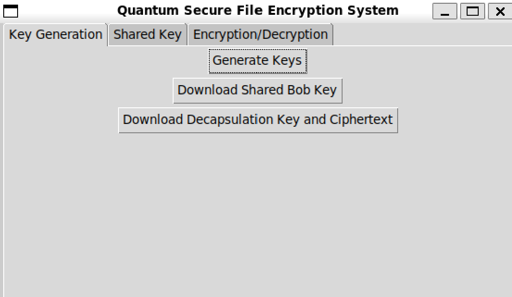
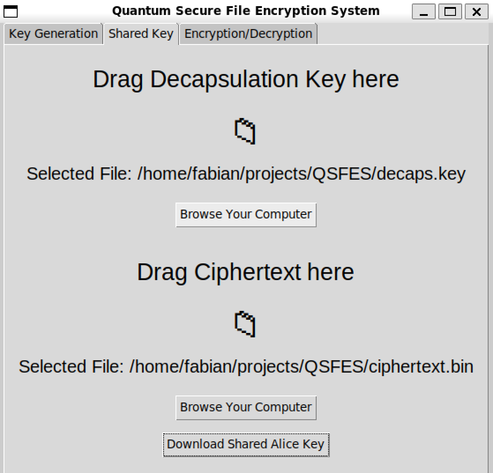
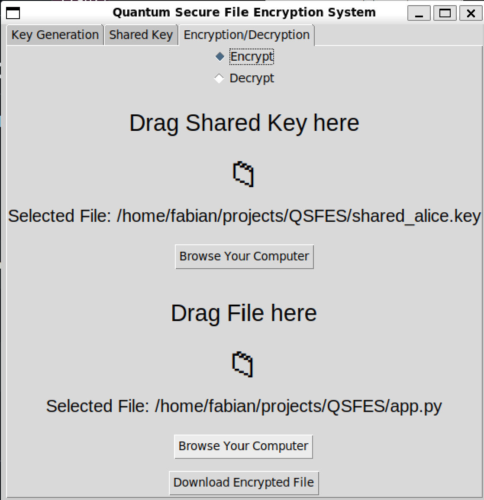

Post-quantum cryptography prototype
Quantum Secure File Encryption System
A desktop application that translates the ML-KEM pseudocode in NIST FIPS 203 into Python and connects the resulting shared secret to AES-GCM file encryption.
Overview
Post-quantum key establishment for practical file encryption
FIPS 203 defines ML-KEM as a mechanism for two parties to establish the same secret key over a public channel. QSFES implements that key-establishment flow with ML-KEM-512, including its K-PKE component, sampling, encoding, compression, and Number Theoretic Transform operations.
The shared 32-byte secret is then used as an AES-256-GCM key. This hybrid design keeps bulk file encryption in an efficient authenticated symmetric cipher while using the post-quantum mechanism for shared-key establishment.
ML-KEM-512
Key generation, encapsulation, and decapsulation
The implementation follows the FIPS 203 algorithm structure from polynomial arithmetic through the public KEM interface. SHA3-256, SHA3-512, SHAKE128, SHAKE256, cryptographic randomness, and implicit rejection support the complete shared-secret exchange.
- Module-lattice K-PKE key generation, encryption, and decryption
- Forward and inverse Number Theoretic Transforms
- Centered binomial sampling and rejection sampling
- Byte encoding, decoding, compression, and decompression
AES-256-GCM
Authenticated encryption for arbitrary files
QSFES uses the established secret with AES-GCM. Each encrypted output stores a fresh 12-byte initialization vector, a 16-byte authentication tag, and the ciphertext. Decryption rejects modified data or an incorrect shared key when authentication fails.
- Fresh random IV for each file encryption
- Confidentiality and integrity through GCM authentication
- Drag-and-drop or file-picker input
- Binary encrypted output with original filename recovery
Desktop workflow
One interface for keys, shared secrets, and files
The Tkinter application separates the workflow into three tabs while allowing generated keys, ciphertext, and files to move between participants.


Review the implementation
Explore the Python source, ML-KEM internals, AES-GCM layer, desktop interface, and unit tests on GitHub.